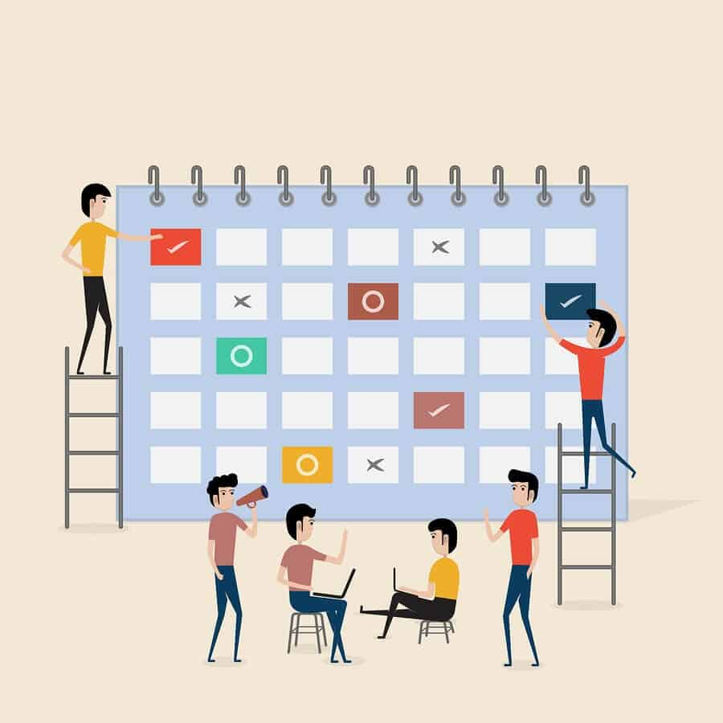

Developed a basic Rock, Paper, Scissors game in python. Utilize randomization for the computer's choice and gather user input. Implement logic to determine the winner based on the classic game rules. This project enhances C programming skills, user input handling, and conditional statements. It's an engaging project for beginners to reinforce fundamental programming concepts.
Developed a basic MP3 music player in java. Leverage Java's rich ecosystem and potentially use third-party libraries to handle the intricacies of MP3 file decoding and playback. A desktop application that allows users to play, pause, stop, skip tracks, adjust volume, and manage playlists for MP3 files.

A basic DSA experiment with Priority Scheduling Applications of Queue in C Language. implementing queue-based solutions can empower businesses with optimized e ciency. Despite potential challenges, such as resistance to change and technical integration issues, overcoming these obstacles by emphasizing the bene ts, involving employees, providing comprehensive training and support, and working closely with IT teams can lead to success. By prioritizing scheduling applications, businesses can streamline operations and improve overall productivity.

Created my portfolio in HTML. Building a personal portfolio website using HTML is an excellent way to showcase your skills, projects, and experiences to potential employers or clients. Your portfolio is a reflection of your professional identity and can leave a lasting impression.